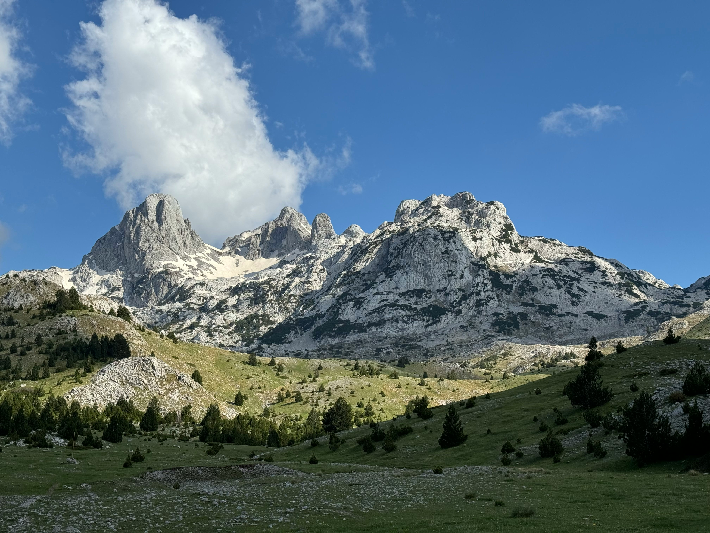
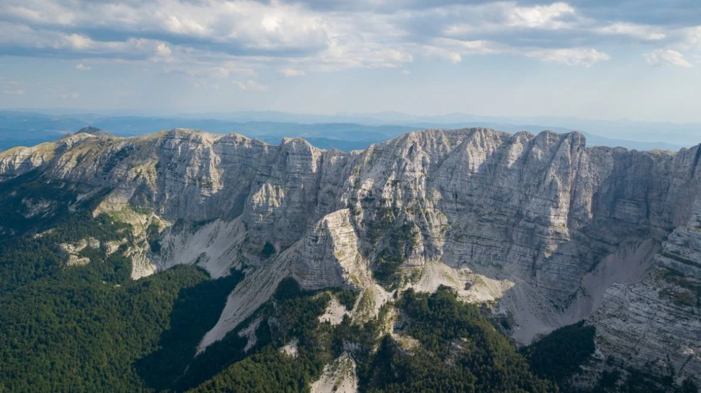
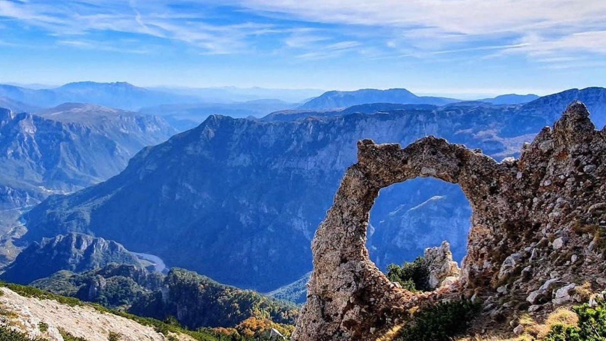
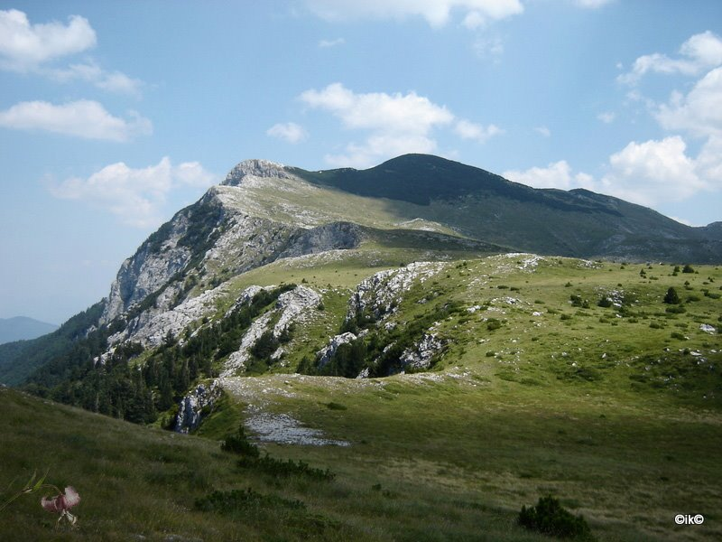
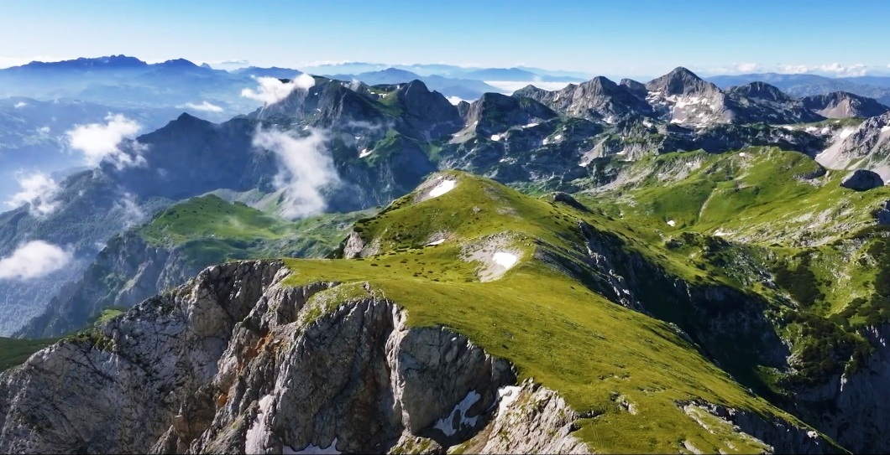
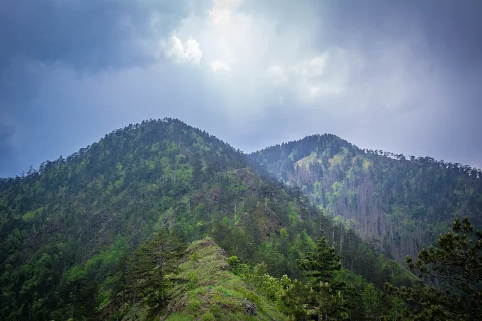

Tuzla · osnovano 1951.
Planina se ne osvaja. Njoj se vraćaš.
Vikend ture, planinarska škola i ljudi koji će vam pokazati zašto rano ustajanje subotom ima smisla.
Godine 1951. pokrenuta je inicijativa za formiranje planinarskog društva u Tuzli
Inicijativni odbor činili su Halid Čokić, Branko Stojanović, Mustafa Kapidžić, Čoko Jakov, Eduard Pavlović, Paša Abidinović i brojni drugi zaljubljenici u prirodu i planinarstvo. Osnivačka skupština Planinarskog društva "Konjuh" održana je u zgradi današnjeg Narodnog pozorišta u Tuzli, dok su prve članske karte štampane u Tuzlanskoj štampariji zahvaljujući Obradu Jakšiću.
Naziv "Konjuh" odabran je kao simbol jedne od najljepših planina sjeveroistočne Bosne, ali i kao omaž legendarnoj pjesmi "Konjuh planinom", koja je kroz stihove čuvala sjećanje na bogatu historiju Tuzle i njenog kraja. Za prvog predsjednika Društva izabran je Halid Čokić, a među prvim članovima Upravnog odbora bili su Vasilije Skripta, Eduard Pavlović, Čoko Jakov, Galib Kabadaić, Paša Abidinović, Mustafa Kapidžić i drugi istaknuti ljubitelji prirode. Njihov entuzijazam postavio je temelje društva koje će u narednim decenijama okupljati generacije planinara i promovisati planinarsku kulturu u Bosni i Hercegovini.
Cijela priča društvaŠest planina kroz jednu nezaboravnu sezonu

Prenj

Velež

Čvrsnica

Bjelašnica

Maglić

Konjuh
Najčešća pitanja
Najčešća pitanja koja nam planinari postavljaju prije prve ture. Ako ne pronađete odgovor koji tražite, slobodno nam se obratite direktno, rado ćemo vam pomoći.
Ne. Svaka tura ima oznaku zahtjevnosti, a vodič prilagođava tempo grupi. Za lakše ture nije potrebna prethodna iskustvo — samo osnovna kondicija i odgovarajuća obuća.
Za prvu turu je dovoljna udobna odjeća po slojevima i planinarske cipele. Ostatak opreme (štapovi, dereze, ranac) možete iznajmiti preko društva ili dogovoriti pozajmicu od iskusnijih članova.
Prijava ide preko stranice svake ture, a broj mjesta je ograničen brojem sjedišta u kombiju. Cijena pokriva prevoz i osiguranje; članovi društva imaju popust na svaku turu.
Vodič prati prognozu do zadnjeg trenutka i ima spremnu alternativnu, laganiju rutu. Ako uslovi postanu opasni, tura se otkazuje ili premješta na drugi termin — sigurnost je uvijek iznad plana.
Popunite prijavu na stranici Članstvo, odaberite plan i prisustvujte jednom uvodnom izlasku. Nakon toga dobijate pristup rasporedu, mega-popustima na ture i planinarskoj školi.
Šta kažu oni koji su već hodali s nama
Prvi put sam se popela na preko 2000 metara baš na jednoj njihovoj turi. Tempo je bio prilagođen grupi, niko nije ostao pozadi, a vodič je stalno provjeravao kako se osjećamo.
Amina K.
članica od 2021.
Zimski kurs mi je promijenio način razmišljanja o opremi. Nisam znao ni kako se pravilno vezuju dereze, a sad vodim jedan dio kursa iduće sezone.
Haris D.
član od 2019.
Društvo je ozbiljno kad treba, a opušteno kad može biti. To se osjeti već na prvom sastanku prije ture, kad neko pita "jesi li siguran za rutu" umjesto da samo ćuti.
Lejla M.
članica od 2023.
Neka sljedeći vikend bude dan za novi vrh i nezaboravne poglede.
Bez obzira jeste li već planinarili ili tek razmišljate o prvom usponu, na prvoj turi bit ćete u pratnji iskusnih vodiča.
Pridruži se društvu